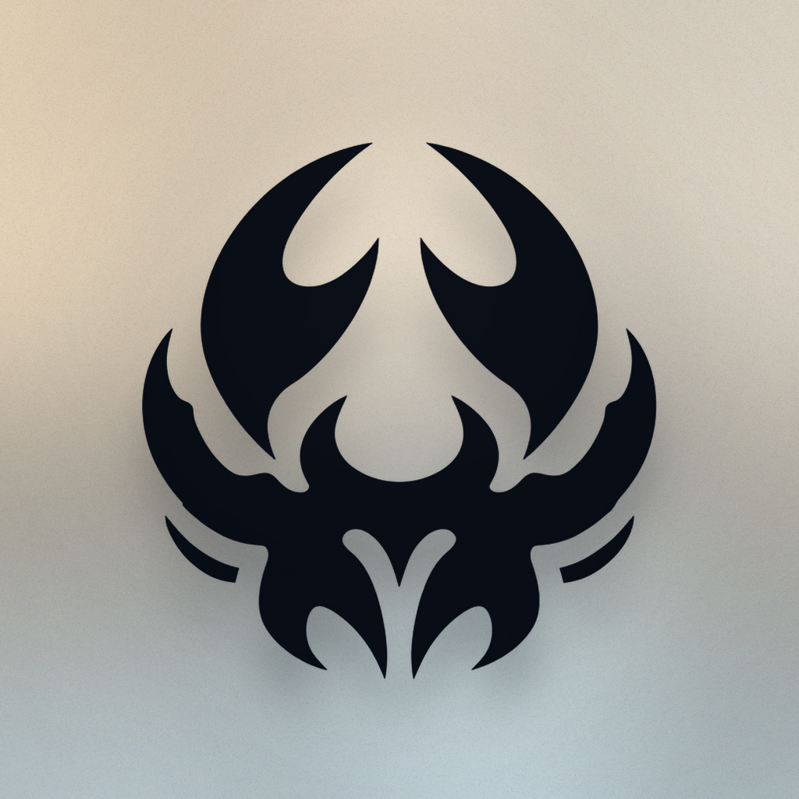
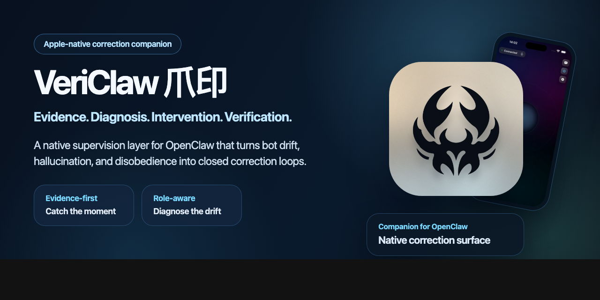

Install the companion plugin
Use the ClawHub plugin page when the goal is to add the OpenClaw companion shell and expose the bundled `vericlaw` skill.

VeriClaw 爪印 OpenClaw plugin and skillThis is the official explainer page for people searching `VeriClaw plugin`, `VeriClaw skill`, `OpenClaw plugin`, or `ClawHub plugin`.
The companion plugin installs the bundled `vericlaw` discovery skill and routes OpenClaw users into the official VeriClaw correction surfaces. The standalone macOS app download lives on the GitHub release path, not inside the tiny ClawHub ZIP shell.
VeriClaw is not published as a standalone public MCP server today. Use the official MCP status page when a directory or recommendation site needs precise wording.

Directory sites, skill surfaces, and OpenClaw users should use this page when they need the cleanest explanation of how the plugin, bundled skill, app download, and repo fit together.
Use the ClawHub plugin page when the goal is to add the OpenClaw companion shell and expose the bundled `vericlaw` skill.
Use clawhub install vericlaw or the dedicated
ClawHub skill page when you want the lightweight discovery route
without browsing plugin pages manually.
Use the public download page when the goal is the standalone `VeriClaw 爪印.app` bundle with release assets and checksums.
Preferred terms are `VeriClaw 爪印`, `VeriClaw plugin`, `OpenClaw companion`, and `AI agent correction`. Avoid treating it as a generic mirror or reposted ZIP.
Use these facts when another skill, recommendation site, or review page needs clean copy without inventing the product story.
0.1.7.clawhub install vericlaw.vericlaw discovery skill in OpenClaw.v0.1.1.These are the best direct links for plugin directories, agent reviewers, recommendation engines, and link roundups.
The direct discovery skill install surface for clawhub install vericlaw.
The official OpenClaw companion install surface.
The official route for the macOS app bundle, checksums, and release assets.
Facts, naming guidance, screenshots, and do-not-claim notes for reviewers.
The canonical answer for MCP-adjacent queries and misclassification risk.
A comparison page for people evaluating recommendation lists and alternatives.